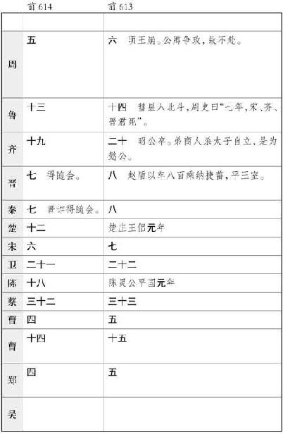
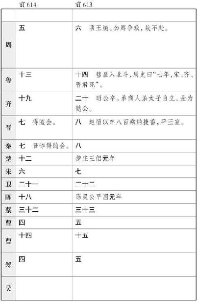
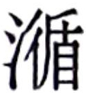

史记卷一百五
扁鹊仓公列传第四十五
扁鹊 者，勃海郡郑 人也，姓秦氏 ，名越人 。少时为人舍长。舍客长桑 君 过，扁鹊 独奇之，常谨遇之。长桑君 亦知扁鹊 非常人也。出入十馀年，乃呼扁鹊 私坐，间与语曰：“我有禁方，年老，欲传与公，公毋泄。”扁鹊 曰：“敬诺。”乃出其怀中药予扁鹊 ：“饮是以上池之水，三十日当知物矣。”乃悉取其禁方书尽与扁鹊 。忽然不见，殆非人也。扁鹊 以其言饮药三十日，视见垣一方人。以此视病，尽见五藏症结，特以诊脉为名耳。为医或在齐 ，或在赵 。在赵 者名扁鹊 。
当晋昭公 时，诸大夫强而公族弱，赵简子 为大夫，专国事。简子 疾，五日不知人，大夫皆惧，于是召扁鹊 。扁鹊 入视病，出，董安于 问扁鹊 ，扁鹊 曰：“血脉治也，而何怪！昔秦穆公 尝如此，七日而寤。寤之日，告公孙支 与子舆 曰：‘我之帝所甚乐。吾所以久者，适有所学也。帝告我：“晋国 且大乱，五世不安。其后将霸，未老而死。霸者之子且令而国男女无别。”’公孙支 书而藏之，秦 策于是出。夫献公 之乱，文公 之霸，而襄公 败秦 师于殽 而归纵淫，此子之所闻。今主君之病与之同，不出三日必间，间必有言也。”
居二日半，简子 寤，语诸大夫曰：“我之帝所甚乐，与百神游于钧天，广乐九奏万舞，不类三代 之乐，其声动心。有一熊欲援我，帝命我射之，中熊，熊死。有罴来，我又射之，中罴，罴死。帝甚喜，赐我二笥，皆有副。吾见儿在帝侧，帝属我一翟 犬，曰：‘及而子之壮也以赐之。’帝告我：‘晋国 且世衰，七世而亡。嬴姓 将大败周 人于范魁 之西，而亦不能有也。’”董安于 受言，书而藏之。以扁鹊 言告简子 ，简子 赐扁鹊 田四万亩。
其后扁鹊 过虢 。虢太子 死，扁鹊 至虢 宫门下，问中庶子喜方者曰：“太子何病，国中治穰过于众事？”中庶子曰：“太子病血气不时，交错而不得泄，暴发于外，则为中害。精神不能止邪气，邪气畜积而不得泄，是以阳缓而阴急，故暴蹶而死。”扁鹊 曰：“其死何如时？”曰：“鸡鸣至今。”曰：“收 乎？”曰：“未也，其死未能半日也。”“言臣齐勃海秦越人 也，家在于郑 ，未尝得望精光侍谒于前也。闻太子不幸而死，臣能生之。”中庶子曰：“先生得无诞之乎？何以言太子可生也！臣闻上古之时，医有俞跗 ，治病不以汤液醴洒，镵石挢引，案扤毒熨，一拨见病之应，因五藏之输，乃割皮解肌，诀脉结筋，搦髓脑，揲荒爪幕，湔浣肠胃，漱涤五藏，练精易形。先生之方能若是，则太子可生也；不能若是而欲生之，曾不可以告咳婴之儿。”终日，扁鹊 仰天叹曰：“夫子之为方也，若以管窥天，以郄视文。越人 之为方也，不待切脉望色听声写形，言病之所在。闻病之阳，论得其阴；闻病之阴，论得其阳。病应见于大表，不出千里，决者至众，不可曲止也。子以吾言为不诚，试入诊太子，当闻其耳鸣而鼻张，循其两股以至于阴，当尚温也。”
中庶子闻扁鹊
言，目眩然而不瞚，舌挢然而不下，乃以扁鹊
言入报虢
君
。虢君
闻之大惊，出见扁鹊
于中阙，曰：“窃闻高义之日久矣，然未尝得拜谒于前也。先生过小国，幸而举之，偏国寡臣幸甚。有先生则活，无先生则弃捐填沟壑，长终而不得反。”言未卒，因嘘唏服臆，魂精泄横，流涕长潸，忽忽承 ，悲不能自止，容貌变更。扁鹊
曰：“若太子病，所谓‘尸蹶’者也。夫以阳入阴中，动胃
缘，中经维络，别下于三焦、膀胱，是以阳脉下遂，阴脉上争，会气闭而不通，阴上而阳内行，下内鼓而不起，上外绝而不为使，上有绝阳之络，下有破阴之纽，破阴绝阳，色废脉乱，故形静如死状。太子未死也。夫以阳入阴支兰藏者生，以阴入阳支兰藏者死。凡此数事，皆五藏蹙中之时暴作也。良工取之，拙者疑殆。”
，悲不能自止，容貌变更。扁鹊
曰：“若太子病，所谓‘尸蹶’者也。夫以阳入阴中，动胃
缘，中经维络，别下于三焦、膀胱，是以阳脉下遂，阴脉上争，会气闭而不通，阴上而阳内行，下内鼓而不起，上外绝而不为使，上有绝阳之络，下有破阴之纽，破阴绝阳，色废脉乱，故形静如死状。太子未死也。夫以阳入阴支兰藏者生，以阴入阳支兰藏者死。凡此数事，皆五藏蹙中之时暴作也。良工取之，拙者疑殆。”
扁鹊 乃使弟子子阳 厉针砥石，以取外三阳五会。有间，太子苏。乃使子豹 为五分之熨，以八减之齐和煮之，以更熨两胁下。太子起坐。更适阴阳，但服汤二旬而复故。故天下尽以扁鹊 为能生死人。扁鹊 曰：“越人 非能生死人也，此自当生者，越人 能使之起耳。”
扁鹊 过齐 ，齐桓侯 客之。入朝见，曰：“君有疾在腠理，不治将深。”桓 侯 曰：“寡人无疾。”扁鹊 出，桓侯 谓左右曰：“医之好利也，欲以不疾者为功。”后五日，扁鹊 复见，曰：“君有疾在血脉，不治恐深。”桓侯 曰：“寡人无疾。”扁鹊 出，桓侯 不悦。后五日，扁鹊 复见，曰：“君有疾在肠胃间，不治将深。”桓侯 不应。扁鹊 出，桓侯 不悦。后五日，扁鹊 复见，望见桓侯 而退走。桓侯 使人问其故。扁鹊 曰：“疾之居腠理也，汤熨之所及也；在血脉，针石之所及也；其在肠胃，酒醪之所及也；其在骨髓，虽司命无奈之何。今在骨髓，臣是以无请也。”后五日，桓侯 体病，使人召扁鹊 ，扁鹊 已逃去。桓侯 遂死。
使圣人预知微，能使良医得蚤从事，则疾可已，身可活也。人之所病，病疾多；而医之所病，病道少。故病有六不治：骄恣不论于理，一不治也；轻身重财，二不治也；衣食不能适，三不治也；阴阳并，藏气不定，四不治也；形羸不能服药，五不治也；信巫不信医，六不治也。有此一者，则重难治也。
扁鹊
名闻天下。过邯郸
，闻贵妇人，即为带下医；过雒阳
，闻周
人爱老人，即为耳目痹医；来入咸阳
，闻秦
人爱小儿，即为小儿医：随俗为变。秦
太医令李醯
自知伎不如扁鹊
也，使人刺杀之。至今天下言脉者，由扁鹊
也。
太仓公 者，齐 太仓长，临菑 人也，姓淳于氏 ，名意 。少而喜医方术。高 后 八年，更受师同郡元里 公乘阳庆 。庆 年七十馀，无子，使意 尽去其故方，更悉以禁方予之，传黄帝 、扁鹊 之脉书，五色诊病，知人死生，决嫌疑，定可治，及药论，甚精。受之三年，为人治病，决死生多验。然左右行游诸侯，不以家为家，或不为人治病，病家多怨之者。
文帝 四年中，人上书言意 ，以刑罪当传西之长安 。意 有五女，随而泣。意 怒，骂曰：“生子不生男，缓急无可使者！”于是少女缇萦 伤父之言，乃随父西。上书曰：“妾父为吏，齐 中称其廉平，今坐法当刑。妾切痛死者不可复生而刑者不可复续，虽欲改过自新，其道莫由，终不可得。妾愿入身为官婢，以赎父刑罪，使得改行自新也。”书闻，上悲其意，此岁中亦除肉刑法。
意 家居，诏召问所为治病死生验者几何人也，主名为谁。
诏问故太仓长臣意 ：“方伎所长，及所能治病者？有其书无有？皆安受学？受学几何岁？尝有所验，何县里人也？何病？医药已，其病之状皆何如？具悉而对。”臣意 对曰：
自意 少时，喜医药，医药方试之多不验者。至高后 八年，得见师临菑元里 公乘阳庆 。庆 年七十馀，意 得见事之。谓意 曰：“尽去而方书，非是也。庆 有古先道遗传黄帝 、扁鹊 之脉书，五色诊病，知人生死，决嫌疑，定可治，及药论书，甚精。我家给富，心爱公，欲尽以我禁方书悉教公。”臣意 即曰：“幸甚，非意 之所敢望也。”臣意 即避席再拜谒，受其脉书上下经、五色诊、奇咳术、揆度阴阳外变、药论、石神、接阴阳禁书，受读解验之，可一年所。明岁即验之，有验，然尚未精也。要事之三年所，即尝已为人治，诊病决死生，有验，精良。今庆 已死十 年所，臣意 年尽三年，年三十九岁也。
齐 侍御史成 自言病头痛，臣意 诊其脉，告曰：“君之病恶，不可言也。”即出，独告成 弟昌 曰：“此病疽也，内发于肠胃之间，后五日当臃肿，后八日呕脓死。”成 之病得之饮酒且内。成 即如期死。所以知成 之病者，臣意 切其脉，得肝气。肝气浊而静，此内关之病也。脉法曰“脉长而弦，不得代四时者，其病主在于肝。和即经主病也，代则络脉有过”。经主病和者，其病得之筋髓里。其代绝而脉贲者，病得之酒且内。所以知其后五日而臃肿，八日呕脓死者，切其脉时，少阳初代。代者经病，病去过人，人则去。络脉主病，当其时，少阳初关一分，故中热而脓未发也，及五分，则至少阳之界，及八日，则呕脓死，故上二分而脓发，至界而臃肿，尽泄而死。热上则熏阳明，烂流络，流络动则脉结发，脉结发则烂解，故络交。热气已上行，至头而动，故头痛。
齐王 中子诸婴儿小子病，召臣意 诊切其脉，告曰：“气鬲病。病使人烦懑，食不下，时呕沫。病得之心忧，数忔食饮。”臣意 即为之作下气汤以饮之，一日气下，二日能食，三日即病愈。所以知小子之病者，诊其脉，心气也，浊躁而经也，此络阳病也。脉法曰“脉来数疾去难而不一者，病主在心”。周身热，脉盛者，为重阳。重阳者，逷心主。故烦懑食不下则络脉有过，络脉有过则血上出，血上出者死。此悲心所生也，病得之忧也。
齐 郎中令循 病，众医皆以为蹙入中，而刺之。臣意 诊之，曰：“涌疝也，令人不得前后溲。”循 曰：“不得前后溲三日矣。”臣意 饮以火齐汤，一饮得前后溲，再饮大溲，三饮而疾愈。病得之内。所以知循 病者，切其脉时，右口气急，脉无五藏气，右口脉大而数。数者中下热而涌，左为下，右为上，皆无五藏应，故曰涌疝。中热，故溺赤也。
齐 中御府长信 病，臣意 入诊其脉，告曰：“热病气也。然暑汗，脉少衰，不死。”曰：“此病得之当浴流水而寒甚，已则热。”信 曰：“唯，然！往冬时，为王使于楚 ，至莒县阳周 水，而莒 桥梁颇坏，信 则揽车辕未欲渡也，马惊，即堕，信 身入水中，几死，吏即来救信 ，出之水中，衣尽濡，有间而身寒，已热如火，至今不可以见寒。”臣意 即为之液汤火齐逐热，一饮汗尽，再饮热去，三饮病已。即使服药，出入二十日，身无病者。所以知信 之病者，切其脉时，并阴。脉法曰“热病阴阳交者死”。切之不交，并阴。并阴者，脉顺清而愈，其热虽未尽，犹活也。肾气有时间浊，在太阴脉口而希，是水气也。肾固主水，故以此知之。失治 一时，即转为寒热。
齐王 太后病，召臣意 入诊脉，曰：“风瘅客脬，难于大小溲，溺赤。”臣意 饮以火齐汤，一饮即前后溲，再饮病已，溺如故。病得之流汗出 。 者，去衣而汗晞也。所以知齐王 太后病者，臣意 诊其脉，切其太阴之口，湿然风气也。脉法曰“沈之而大坚，浮之而大紧者，病主在肾”。肾切之而相反也，脉大而躁。大者，膀胱气也；躁者，中有热而溺赤。
齐章武里曹山跗 病，臣意 诊其脉，曰：“肺消瘅也，加以寒热。”即告其人曰：“死，不治。适其共养，此不当医治。”法曰“后三日而当狂，妄起行，欲走；后五日死”。即如期死。山跗 病得之盛怒而以接内。所以知山跗 之病者，臣意 切其脉，肺气热也。脉法曰“不平不鼓，形獘”。此五藏高之远数以经病也，故切之时不平而代。不平者，血不居其处；代者，时参击并至，乍躁乍大也。此两络脉绝，故死不治。所以加寒热者，言其人尸夺。尸夺者，形獘；形獘者，不当关灸镵石及饮毒药也。臣意 未往诊时，齐 太医先诊山跗 病，灸其足少阳脉口，而饮之半夏丸，病者即泄注，腹中虚；又灸其少阴脉，是坏肝刚绝深，如是重损病者气，以故加寒热。所以后三日而当狂者，肝一络连属结绝乳下阳明，故络绝，开阳明脉，阳明脉伤，即当狂走。后五日死者，肝与心相去五分，故曰五日尽，尽即死矣。
齐 中尉潘满如 病少腹痛，臣意 诊其脉，曰：“遗积瘕也。”臣意 即谓齐 太仆臣饶 、内史臣繇 曰：“中尉不复自止于内，则三十日死。”后二十馀日，溲血死。病得之酒且内。所以知潘满如 病者，臣意 切其脉深小弱，其卒然合合也，是脾气也。右脉口气至紧小，见瘕气也。以次相乘，故三十日死。三阴俱抟者，如法；不俱抟者，决在急期；一抟一代者，近也。故其三阴抟，溲血如前止。
阳虚侯 相赵章 病，召臣意 。众医皆以为寒中，臣意 诊其脉曰：“迵风。”迵风者，饮食下嗌而辄出不留。法曰“五日死”，而后十日乃死。病得之酒。所以知赵章 之病者，臣意 切其脉，脉来滑，是内风气也。饮食下嗌而辄出不留者，法五日死，皆为前分界法。后十日乃死，所以过期者，其人嗜粥，故中藏实，中藏实故过期。师言曰“安谷者过期，不安谷者不及期”。
济北王 病，召臣意 诊其脉，曰：“风蹶胸满。”即为药酒，尽三石，病已。得之汗出伏地。所以知济北王 病者，臣意 切其脉时，风气也，心 脉浊。病法“过入其阳，阳气尽而阴气入”。阴气入张，则寒气上而热气下，故胸满。汗出伏地者，切其脉，气阴。阴气者，病必入中，出及瀺水也。
齐 北宫司空命妇出於 病，众医皆以为风入中，病主在肺，刺其足少阳脉。臣意 诊其脉，曰：“病气疝，客于膀胱，难于前后溲，而溺赤。病见寒气则遗溺，使人腹肿。”出於 病得之欲溺不得，因以接内。所以知出於 病者，切其脉大而实，其来难，是蹶阴之动也。脉来难者，疝气之客于膀胱也。腹之所以肿者，言蹶阴之络结小腹也。蹶阴有过则脉结动，动则腹肿。臣意 即灸其足蹶阴之脉，左右各一所，即不遗溺而溲清，小腹痛止。即更为火齐汤以饮之，三日而疝气散，即愈。
故济北王 阿母自言足热而懑，臣意 告曰：“热蹶也。”则刺其足心各三所，案之无出血，病旋已。病得之饮酒大醉。
济北王 召臣意 诊脉诸女子侍者，至女子竖 ，竖 无病。臣意 告永巷长曰：“竖 伤脾，不可劳，法当春呕血死。”臣意 言王曰：“才人女子竖 何能？”王曰：“是好为方，多伎能，为所是案法新，往年市之民所，四百七十万，曹偶四人。”王曰：“得毋有病乎？”臣意 对曰：“竖 病重，在死法中。”王召视之，其颜色不变，以为不然，不卖诸侯所。至春，竖 奉剑从王之厕，王去，竖 后，王令人召之，即仆于厕，呕血死。病得之流汗。流汗者，法病内重，毛发而色泽，脉不衰，此亦内关之病也。
齐 中大夫病龋齿，臣意 灸其左大阳明脉，即为苦参汤，日嗽三升，出入五六日，病已。得之风，及卧开口，食而不嗽。
菑川王
美人怀子而不乳，来召臣意
。臣意
往，饮以莨 药一撮，以酒饮之，旋乳。臣意
复诊其脉，而脉躁。躁者有馀病，即饮以消石一齐，出血，血如豆比五六枚。
药一撮，以酒饮之，旋乳。臣意
复诊其脉，而脉躁。躁者有馀病，即饮以消石一齐，出血，血如豆比五六枚。
齐 丞相舍人奴从朝入宫，臣意 见之食闺门外，望其色有病气。臣意 即告宦者平 。平 好为脉，学臣意 所，臣意 即示之舍人奴病，告之曰：“此伤脾气也，当至春鬲塞不通，不能食饮，法至夏泄血死。”宦者平 即往告相曰：“君之舍人奴有病，病重，死期有日。”相君曰：“卿何以知之？”曰：“君朝时入宫，君之舍人奴尽食闺门外，平 与仓公 立，即示平 曰，病如是者死。”相即召舍人而谓之曰：“公奴有病不？”舍人曰：“奴无病，身无痛者。”至春果病，至四月，泄血死。所以知奴病者，脾气周乘五藏，伤部而交，故伤脾之色也，望之杀然黄，察之如死青之兹。众医不知，以为大虫，不知伤脾。所以至春死病者，胃气黄，黄者土气 也，土不胜木，故至春死。所以至夏死者，脉法曰“病重而脉顺清者曰内关”，内关之病，人不知其所痛，心急然无苦。若加以一病，死中春；一愈顺，及一时。其所以四月死者，诊其人时愈顺。愈顺者，人尚肥也。奴之病得之流汗数出，炙于火而以出见大风也。
菑川王 病，召臣意 诊脉，曰：“蹶上为重，头痛身热，使人烦懑。”臣意 即以寒水拊其头，刺足阳明脉，左右各三所，病旋已。病得之沐发未干而卧。诊如前，所以蹶，头热至肩。
齐王黄姬 兄黄长卿 家有酒召客，召臣意 。诸客坐，未上食。臣意 望见王后弟宋建 ，告曰：“君有病，往四五日，君要胁痛不可俛仰，又不得小溲。不亟治，病即入濡肾。及其未舍五藏，急治之。病方今客肾濡，此所谓‘肾痹’也。”宋建 曰：“然，建 故有要脊痛。往四五日，天雨，黄氏 诸倩见建 家京下方石，即弄之，建 亦欲效之，效之不能起，即复置之。暮，要脊痛，不得溺，至今不愈。”建 病得之好持重。所以知建 病者，臣意 见其色，太阳色干，肾部上及界要以下者枯四分所，故以往四五日知其发也。臣意 即为柔汤使服之，十八日所而病愈。
济北王 侍者韩女 病要背痛，寒热，众医皆以为寒热也。臣意 诊脉，曰：“内寒，月事不下也。”即窜以药，旋下，病已。病得之欲男子而不可得也。所以知韩女 之病者，诊其脉时，切之，肾脉也，啬而不属。啬而不属者，其来难，坚，故曰月不下。肝脉弦，出左口，故曰欲男子不可得也。
临菑氾里 女子薄吾 病甚，众医皆以为寒热笃，当死，不治。臣意 诊其脉，曰：“蛲瘕。”蛲瘕为病，腹大，上肤黄粗，循之戚戚然。臣意 饮以芫华一撮，即出蛲可数升，病已，三十日如故。病蛲得之于寒湿，寒湿气宛笃不发，化为虫。臣意 所以知薄吾 病者，切其脉，循其尺，其尺索刺粗，而毛美奉发，是虫气也。其色泽者，中藏无邪气及重病。
齐淳于司马 病，臣意 切其脉，告曰：“当病迵风。迵风之状，饮食下嗌辄后之。病得之饱食而疾走。”淳于司马 曰：“我之王家食马肝，食饱甚，见酒来，即走去，驱疾至舍，即泄数十出。”臣意 告曰：“为火齐米汁饮之，七八日而当愈。”时医秦信 在旁，臣意 去，信 谓左右阁都尉 曰：“意 以淳于司马 病为何？”曰：“以为迥风，可治。”信 即笑曰：“是不知也。淳于司马 病，法当后九日死。”即后九日不死，其家复召臣意 。臣意 往问之，尽如意 诊。臣即为一火齐米汁，使服之，七八日病已。所以知之者，诊其脉时，切之，尽如法。其病顺，故不死。
齐 中郎破石 病，臣意 诊其脉，告曰：“肺伤，不治，当后十日丁亥溲血死。”即后十一日，溲血而死。破石 之病，得之堕马僵石上。所以知破石 之病者，切其脉，得肺阴气，其来散，数道至而不一也。色又乘之。所以知其堕马者，切之得番阴脉。番阴脉入虚里，乘肺脉。肺脉散者，固色变也乘之。所以不中期死者，师言曰“病者安谷即过期，不安谷则不及期”。其人嗜黍，黍主肺，故过期。所以溲血者，诊脉法曰“病养喜阴处者顺死，养喜阳处者逆死”。其人喜自静，不躁，又久安坐，伏几而寐，故血下泄。
齐王 侍医遂 病，自练五石服之。臣意 往过之，遂 谓意 曰：“不肖有病，幸诊遂 也。”臣意 即诊之，告曰：“公病中热。论曰‘中热不溲者，不可服五石’。石之为药精悍，公服之不得数溲，亟勿服。色将发臃。”遂 曰：“扁鹊 曰‘阴石以治阴病，阳石以治阳病’。夫药石者有阴阳水火之齐，故中热，即为阴石柔齐治之；中寒，即为阳石刚齐治之。”臣意 曰：“公所论远矣。扁鹊 虽言若是，然必审诊，起度量，立规矩，称权衡，合色脉表里有馀不足顺逆之法，参其人动静与息相应，乃可以论。论曰‘阳疾处内，阴形应外者，不加悍药及镵石’。夫悍药入中，则邪气辟矣，而宛气愈深。诊法曰‘二阴应外，一阳接内者，不可以刚药’。刚药入则动阳，阴病益衰，阳病益箸，邪气流行，为重困于俞，忿发为疽。”意 告之后百馀日，果为疽发乳上，入缺盆，死。此谓论之大体也，必有经纪。拙工有一不习，文理阴阳失矣。
齐王 故为阳虚侯 时，病甚，众医皆以为蹶。臣意 诊脉，以为痹，根在右胁下，大如覆杯，令人喘，逆气不能食。臣意 即以火齐粥且饮，六日气下；即令更服丸药，出入六日，病已。病得之内。诊之时不能识其经解，大识其病所在。
臣意 尝诊安阳武都里成开方 ，开方 自言以为不病，臣意 谓之病苦沓风，三岁四支不能自用，使人喑，喑即死。今闻其四支不能用，喑而未死也。病得之数饮酒以见大风气。所以知成开方 病者，诊之，其脉法奇咳言曰“藏气相反者死”。切之，得肾反肺，法曰“三岁死”也。
安陵阪里 公乘项处 病，臣意 诊脉，曰：“牡疝。”牡疝在鬲下，上连肺。病得之内。臣意 谓之：“慎毋为劳力事，为劳力事则必呕血死。”处 后蹴踘，要蹶寒，汗出多，即呕血。臣意 复诊之，曰：“当旦日日夕死。”即死。病得之内。所以知项处 病者，切其脉得番阳。番阳入虚里，处 旦日死。一番一络者，牡疝也。
臣意
曰：他所诊期决死生及所治已病众多，久颇忘之，不能尽识，不敢以对。
问臣意 ：“所诊治病，病名多同而诊异，或死或不死，何也？”对曰：“病名多相类，不可知，故古圣人为之脉法，以起度量，立规矩，县权衡，案绳墨，调阴阳，别人之脉各名之，与天地相应，参合于人，故乃别百病以异之，有数者能异之，无数者同之。然脉法不可胜验，诊疾人以度异之，乃可别同名，命病主在所居。今臣意 所诊者，皆有诊籍。所以别之者，臣意 所受师方适成，师死，以故表籍所诊，期决死生，观所失所得者合脉法，以故至今知之。”
问臣意 曰：“所期病决死生，或不应期，何故？”对曰：“此皆饮食喜怒不节，或不当饮药，或不当针灸，以故不中期死也。”
问臣意 ：“意 方能知病死生，论药用所宜，诸侯王大臣有尝问意 者不？及文王 病时，不求意 诊治，何故？”对曰：“赵王 、胶西王 、济南王 、吴王 皆使人来召臣意 ，臣意 不敢往。文王 病时，臣意 家贫，欲为人治病，诚恐吏以除拘臣意 也，故移名数，左右不修家生，出行游国中，问善为方数者事之久矣，见事数师，悉受其要事，尽其方书意，及解论之。身居阳虚侯国 ，因事侯。侯入朝，臣意 从之长安 ，以故得诊安陵项处 等病也。”
问臣意 ：“知文王 所以得病不起之状？”臣意 对曰：“不见文王 病，然窃闻文王 病喘，头痛，目不明。臣意 心论之，以为非病也。以为肥而蓄精，身体不得摇，骨肉不相任，故喘，不当医治。脉法曰‘年二十脉气当趋，年三十当疾步，年四十当安坐，年五十当安卧，年六十已上气当大董’。文王 年未满二十，方脉气之趋也而徐之，不应天道四时。后闻医灸之即笃，此论病之过也。臣意 论之，以为神气争而邪气入，非年少所能复之也，以故死。所谓气者，当调饮食，择晏日，车步广志，以适筋骨肉血脉，以泻气。故年二十，是谓‘易贸’，法不当砭灸，砭灸至气逐。”
问臣意 ：“师庆 安受之？闻于齐 诸侯不？”对曰：“不知庆 所师受。庆 家富，善为医，不肯为人治病，当以此故不闻。庆 又告臣意 曰：‘慎毋令我子孙知若学我方也。’”
问臣意 ：“师庆 何见于意 而爱意 ，欲悉教意 方？”对曰：“臣意 不闻师庆 为方善也。意 所以知庆 者，意 少时好诸方事，臣意 试其方，皆多验，精良。臣意 闻菑川唐里公孙光 善为古传方，臣意 即往谒之。得见事之，受方化阴阳及传语法，臣意 悉受书之。臣意 欲尽受他精方，公孙光 曰：‘吾方尽矣， 不为爱公所。吾身已衰，无所复事之。是吾年少所受妙方也，悉与公，毋以教人。'臣意 曰：‘得见事侍公前，悉得禁方，幸甚。意 死不敢妄传人。’居有间，公孙光 闲处，臣意 深论方，见言百世为之精也。师光 喜曰：‘公必为国工。吾有所善者皆疏，同产处临菑 ，善为方，吾不若，其方甚奇，非世之所闻也。吾年中时，尝欲受其方，杨中倩 不肯，曰“若非其人也”。胥与公往见之，当知公喜方也。其人亦老矣，其家给富。’时者未往，会庆 子男殷 来献马，因师光 奏马王所，意 以故得与殷 善。光 又属意 于殷 曰：‘意 好数，公必谨遇之，其人圣儒。’即为书以意 属阳庆 ，以故知庆 。臣意 事庆 谨，以故爱意 也。”
问臣意 曰：“吏民尝有事学意 方，及毕尽得意 方不？何县里人？”对曰：“临菑 人宋邑 。邑 学，臣意 教以五诊，岁馀。济北王 遣太医高期 、王禹 学，臣意 教以经脉高下及奇络结，当论俞所居，及气当上下出入邪正逆顺，以宜镵石，定砭灸处，岁馀。菑川王 时遣太仓马长冯信 正方，臣意 教以案法逆顺，论药法，定五味及和齐汤法。高永侯 家丞杜信 ，喜脉，来学，臣意 教以上下经脉五诊，二岁馀。临菑召里唐安 来学，臣意 教以五诊上下经脉，奇咳，四时应阴阳重，未成，除为齐王 侍医。”
问臣意
：“诊病决死生，能全无失乎？”臣意
对曰：“意
治病人，必先切其脉，乃治之。败逆者不可治，其顺者乃治之。心不精脉，所期死生视可治，时时失之，臣意
不能全也。”
太史公 曰：女无美恶，居宫见妒；士无贤不肖，入朝见疑。故扁鹊 以其伎见殃，仓公 乃匿迹自隐而当刑。缇萦 通尺牍，父得以后宁。故老子 曰“美好者不祥之器”，岂谓扁鹊 等邪？若仓公 者，可谓近之矣。